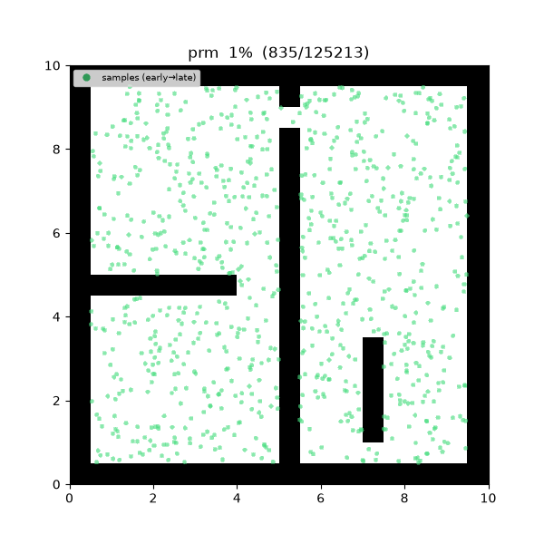
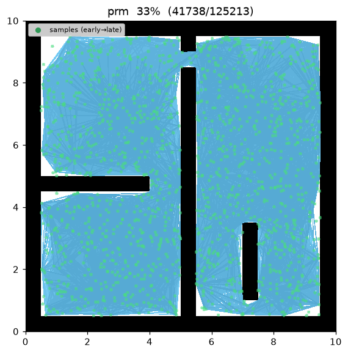
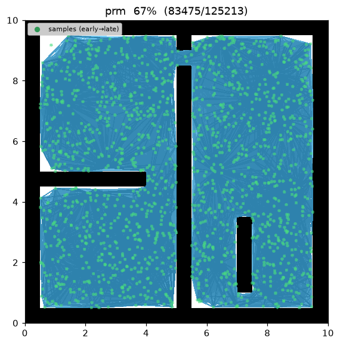
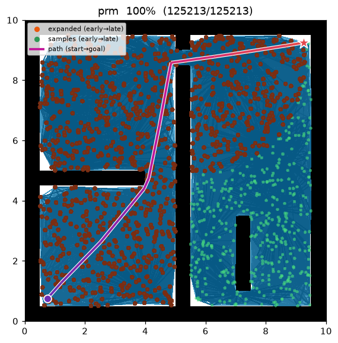
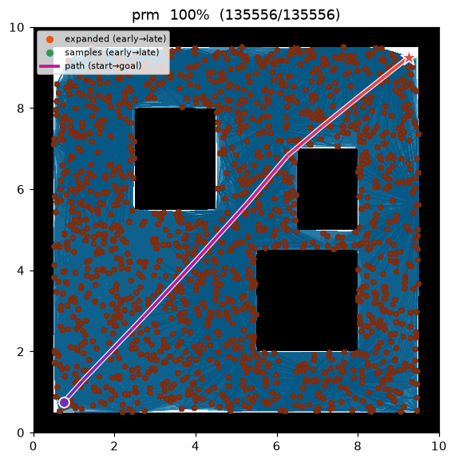

PRM (Probabilistic Roadmap)¶
| Item | Description |
|---|---|
| Category | sampling-based, multi-query roadmap (used here single-query) |
| Required capability | SamplingSpace |
| Completeness | probabilistically complete |
| Optimality | not asymptotically optimal — fixed radius, so quality depends on samples and radius |
| Complexity | O(n²) edge checks (naive) + Dijkstra query O(E log V) |
| Original paper | Kavraki, Švestka, Latombe & Overmars (1996) 1 |
Background¶
Kavraki et al.1 proposed the roadmap method to answer many queries (multi-query) quickly in high-dimensional configuration spaces. By sampling free space up front into a graph, each later start→goal query reduces to a shortest-path search over that graph. This project uses the roadmap in a single-query form (rebuilt per query), but the algorithmic skeleton is exactly the original.
PRM is the roadmap foundation on which the later asymptotically optimal variants (PRM*, FMT*, BIT*) all build — they change only the radius policy for what gets connected to what.
It has two phases:
- Learning — sample
num_samplescollision-free nodes and connect every pair withinconnection_radiusvia a local planner (a collision check on the straight-line motion). - Query — add start and goal as nodes, connect them under the same radius, then run Dijkstra over the roadmap for the shortest path.
How It Works¶
PRM(start, goal):
R ← roadmap()
R.add(start); R.add(goal)
for i in 1..num_samples: # learning: sample free nodes
q ← sample()
if is_state_valid(q): R.add(q)
for v in R.nodes: # learning: fixed-radius connect
for u in R.nodes within connection_radius of v (u before v):
if is_motion_valid(u, v):
R.add_edge(u, v, distance(u, v))
return DIJKSTRA(R, start, goal) # query
The implementation adds nodes one at a time and only attempts to connect each to nodes added before it — so each undirected edge is created exactly once. Start and goal are part of the roadmap, so they connect under the same radius rule with no separate connection step.
Properties¶
- Completeness: probabilistically complete — if a solution exists it is found with probability 1 as the sample count → ∞1.
- Optimality: not asymptotically optimal. With a constant radius the edge density grows with
the sample count; solution quality depends on
num_samplesandconnection_radius, and convergence to the shortest path is not guaranteed even in the limit. PRM* fixes exactly this with its radius policy. - Cost: the naive implementation examines O(n²) candidate edges by all-pairs distance checks. In a multi-query setting the roadmap is reused, so per-query cost amortizes to a Dijkstra run.
Parameters¶
| Name | Type | Default | Range | Description |
|---|---|---|---|---|
num_samples |
int | 1500 | [1, 200000] | Number of collision-free samples placed in the roadmap (start/goal excluded) |
connection_radius |
float | 2.0 | [0.01, 100.0] | Maximum distance to connect two nodes with an edge (m) |
seed |
int | 1 | [0, 2^31−1] | Random seed (reproducibility) |
Roadmap Construction and Query¶
Roadmap. For the sample set \(V=\{v_1,\dots,v_n\}\subset X_{\text{free}}\) the edge set is
i.e. every pair within the fixed radius \(r=\texttt{connection\_radius}\) whose straight-line motion is collision-free. Edge cost is the Euclidean distance \(c(u,v)=\lVert u-v\rVert\).
Query. Insert start \(s\) and goal \(g\) into \(V\) and solve, by Dijkstra over the roadmap,
Because \(r\) is fixed, \(Y_n\) improves as the graph densifies but is not guaranteed to converge to the optimum \(c^*\) as \(n\to\infty\) — the decisive difference from the asymptotically optimal variants.
Implementation Notes¶
- C++:
cpp/src/global_planning/prm.cpp, Python:python/navigation/global_planning/prm.py - The roadmap data structure, connection, and Dijkstra query live in common utilities
(
roadmap_common/_roadmap) shared with PRM*. PRM only layers a fixed-radius policy on top. - Near-neighbour queries use
near_pointsfromsampling_common/_sampling, shared with the batch planners.
Emitted Trace Events¶
planning_started → sample_drawn* → edge_added* → node_expanded* → path_found → planning_finished
sample_drawn marks a learning-phase sample, edge_added a roadmap edge, and node_expanded a node
popped by Dijkstra during the query.
Demo¶
maze01 — samples scatter across free space, within-radius pairs are wired into a roadmap, and
Dijkstra then extracts the shortest path over it.

Intermediate search progress (left → right: early samples/edges / roadmap forming / final path):
 |
 |
 |
Final result on open01 — nearly a straight line:

Measurements (Python, seed = 1, trace on):
| map | path cost | roadmap nodes | expanded (Dijkstra pops) |
|---|---|---|---|
| maze01 | 13.595 | 1,502 | 1,091 |
| open01 | 12.053 | — | — |
The C++ implementation mirrors the same scenario and produces matching results within the variance of the two languages' random streams.
Reproduce:
python python/demos/demo_prm.py \
--map maps/grid/maze01.yaml --scenario maps/scenarios/maze01_s1.yaml \
--params configs/global_planning/prm.yaml --trace out/prm.jsonl
python tools/viz/replay.py out/prm.jsonl --gif out/prm.gif
References¶
-
Kavraki, L. E., Švestka, P., Latombe, J.-C., & Overmars, M. H. (1996). "Probabilistic roadmaps for path planning in high-dimensional configuration spaces." IEEE Transactions on Robotics and Automation, 12(4), 566–580. doi:10.1109/70.508439 ↩↩↩